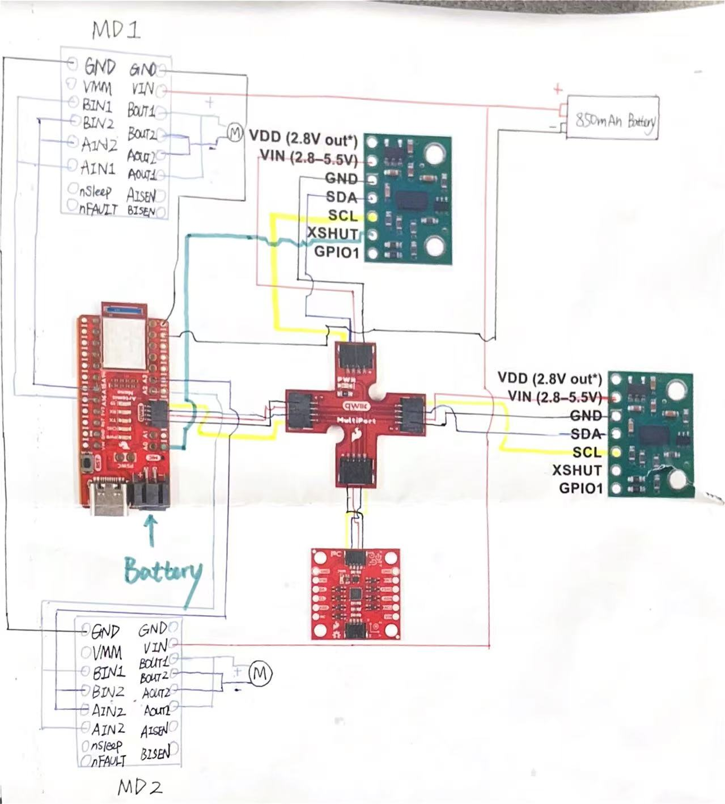
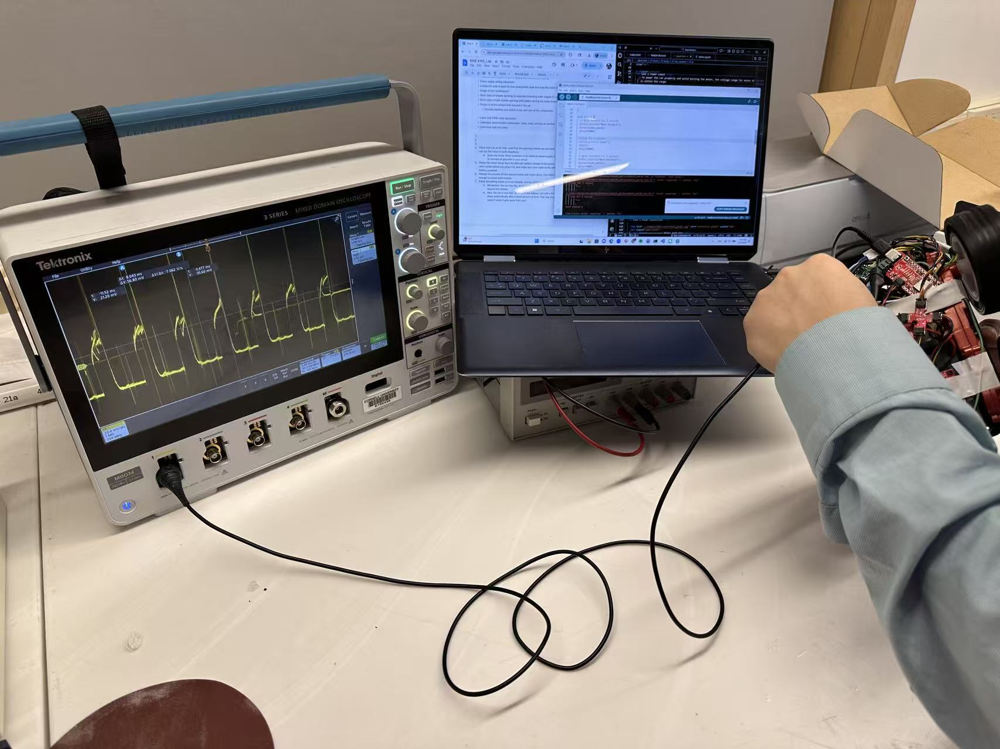
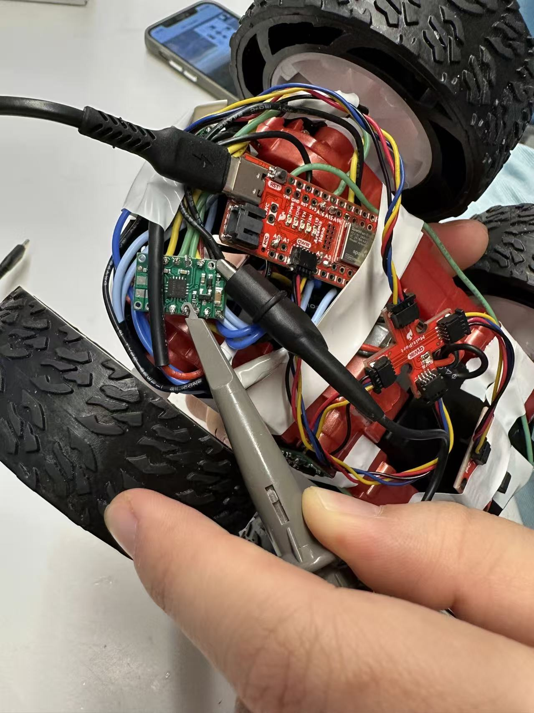
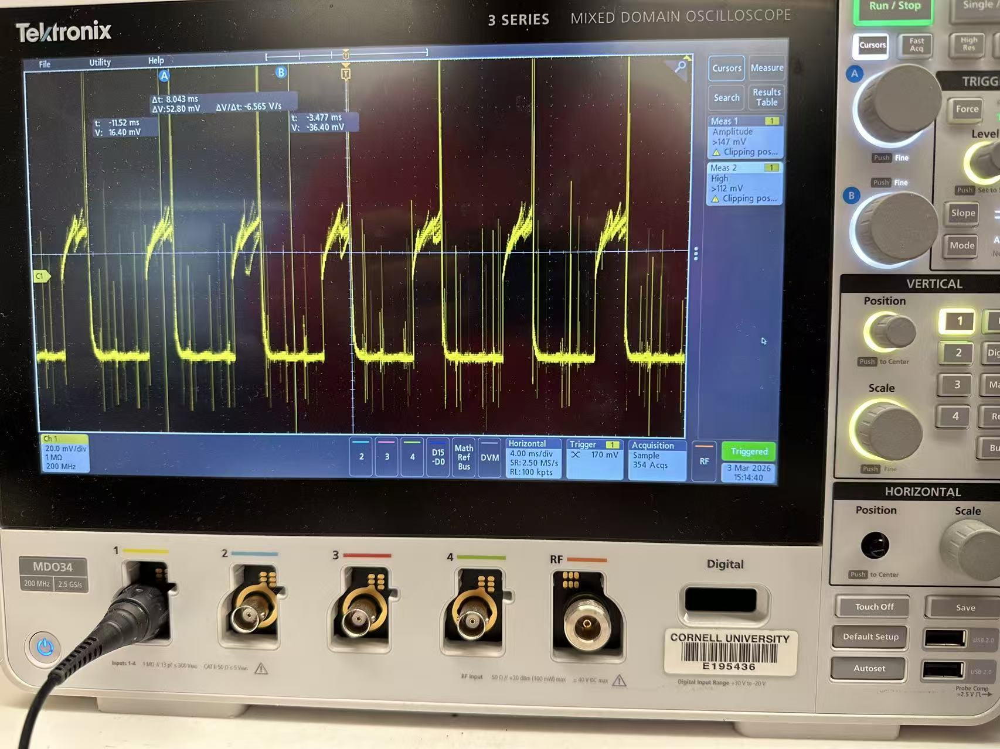

Lab 4: Artemis + Bluetooth
Lab 4: Pre Lab
In the prelab, we are asked to think of pin used for control on the Artemis, separate power sources for Artemis and motors & drivers. I used A2 & A3 for motor driver 2; A15 & A16 for motor driver 1. I thought using two sides of Artemis board can space out connection from two sides. They are all analog pins through which I can send PWM signals. I used different battery sources to provide big currents to motors which is necessary for FAST robotics. Besides, having independent power sources avoid abnormal change in motor voltage would not interfere BLE connections.

Task 1 Power Check
To power the car properly and avoid burning the motor, the voltage range for motor driver is 2.7 to 10.8V. The battery I used is 3.7V, which is within the range.
Task 2 PWM Signal Generation
To verify Artemis generating proper PWM control signals and that duty cycle can change
the modulate motor power, I have code below. The power supply is connected by soldering, as
well as ground. When capturing signals by oscilliscope, I used alligator clips connecting to
output port and ground.
I set the speed to be 80 as it is hard to touch the output pin stably while baring the shaking
from high-speed wheel rotation. It is within the range 0 to 255 range for PWM signals. By setting
the speed, I can decide the duty cycle (current value / top value).



// Motor 1 pins
#define MOTOR1_IN1 A16
#define MOTOR1_IN2 A15
// Motor 2 pins
#define MOTOR2_IN1 A2
#define MOTOR2_IN2 A3
int pwm_speed = 80; // PWM speed
void setup() {
Serial.begin(115200);
// Set as output (from Artemis, input to motor controller)
pinMode(MOTOR1_IN1, OUTPUT);
pinMode(MOTOR1_IN2, OUTPUT);
pinMode(MOTOR2_IN1, OUTPUT);
pinMode(MOTOR2_IN2, OUTPUT);
}
void loop() {
// move forward
Serial.println("Move forward");
forward(pwm_speed);
delay(5000);
//stop
Serial.println("Stop!");
stop();
delay(5000);
}
// movement functions
void forward(int speed) {
analogWrite(MOTOR1_IN1, speed);
analogWrite(MOTOR1_IN2, 0);
analogWrite(MOTOR2_IN1, speed);
analogWrite(MOTOR2_IN2, 0);
}
// stop functions
void stop() {
analogWrite(MOTOR1_IN1, 0);
analogWrite(MOTOR1_IN2, 0);
analogWrite(MOTOR2_IN1, 0);
analogWrite(MOTOR2_IN2, 0);
}
Task 4 Wheel Test (Two Direction)
I commented out the code for the second motor to have wheels spinning on the table. I added the code below to enable the spinning in the other direction.

...
...
Task 5 Power Connection
......
Task 1 Power Connection
Task 1 Motor Calibration
Task 1 Open Loop Control
......